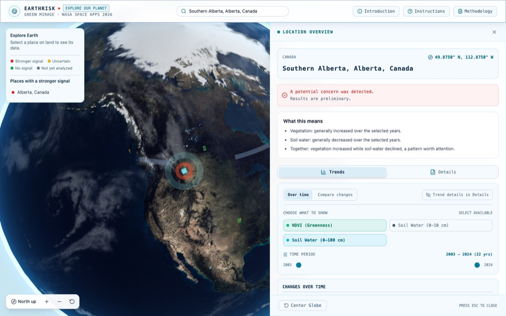
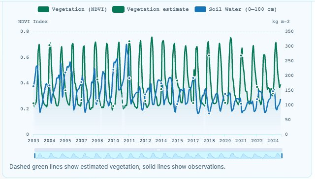
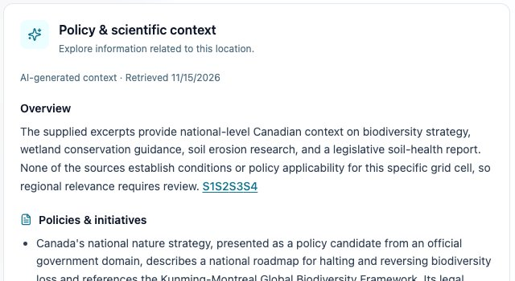

When the land gets greener,
what happens to its water?
Explore vegetation and root-zone soil water together.
Satellite imagery can show a landscape becoming greener over time.
But greenness alone cannot tell us whether the water stored in its root zone is rising or falling.
A multi-variable view helps people ask where water and vegetation trends may be moving apart.
Green is a clue — not the whole story.
EarthRisk brings vegetation and soil-water histories together for the same place.
● Stronger signal ● Uncertain ● No detected divergence

Live example: southern Alberta, 49.875° N, 112.875° W. Opposing trends are an exploratory screening result.
Monthly greenness
~1 km source pixels
Quality filtering
0.25° cells · monthly
Monthly modeled
root-zone soil water
The workflow aligns both records by cell and month, then compares annual trends for the selected period.
Three GLDAS soil layers are combined as water storage in kg m⁻². Short NDVI gaps may be estimated with a seasonal curve.

Real southern Alberta cell: monthly vegetation and root-zone soil-water records, 2003–2024.
A screening signal invites field investigation; it does not prove ecological harm.
Frame questions for local soil checks and irrigation planning.
Explore changes in familiar places and discuss water concerns.
Find locations for further research and policy review.
The interface can be tailored to diverse demographics through accessible language, local context, and future localization. Users can explore without needing to interpret raw data alone.

Optional AI-assisted overview uses web sources; source relevance and accuracy require review.
34-31-40-122.sslip.io
Completed historical tiles are added progressively, with the Canadian Prairies prioritized.
Explore the signal. Ground-truth the story.